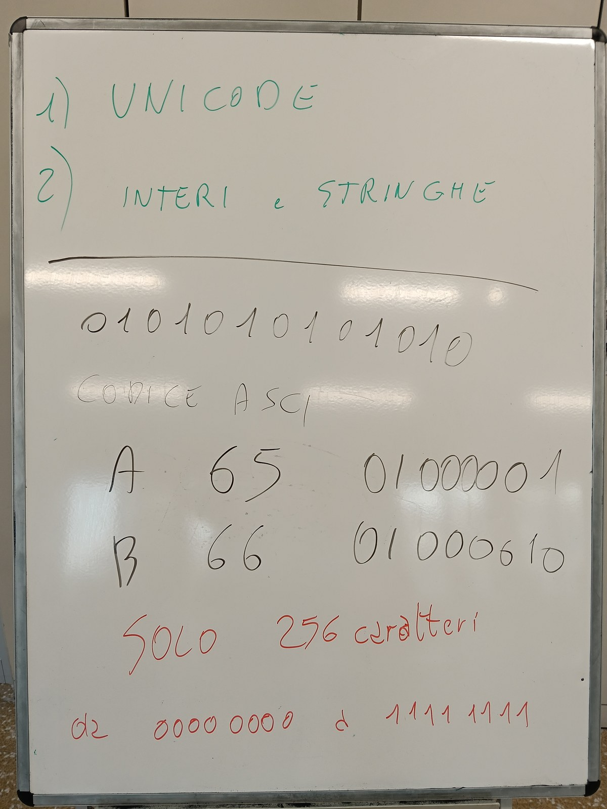
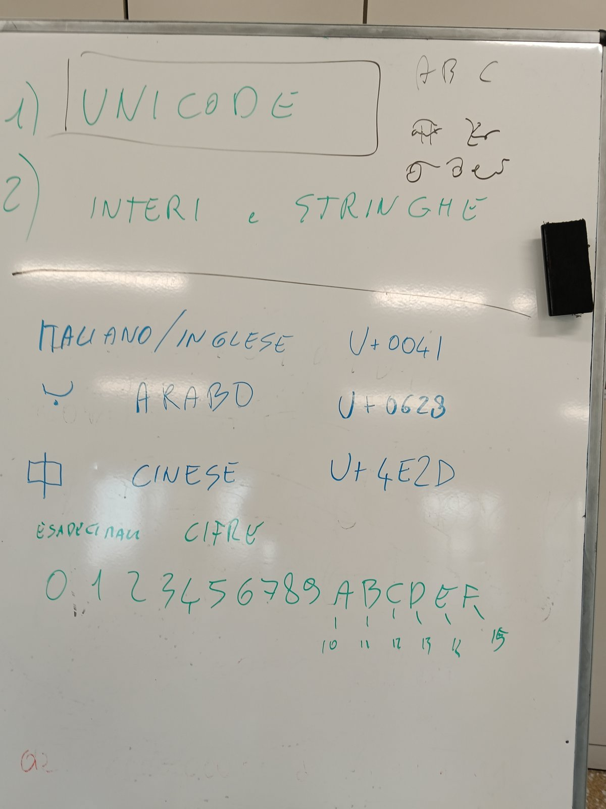
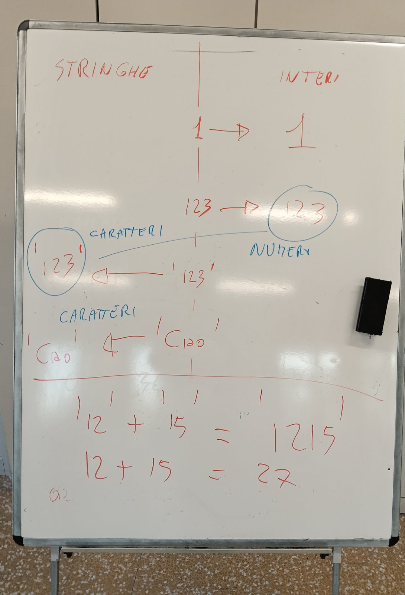

Il computer scrive in tutte le lingue
الحاسوب يكتب بكل اللغات · 电脑会写所有语言 · 1INF 30/10/2026
La pagina viene aggiornata spesso durante la lezione: premi F5 per vedere la versione nuova. · اضغط F5 لرؤية النسخة الجديدة. · 按 F5 查看新版本。
La mia giornata · يومي · 我的一天اليوم جزءان: ١. Unicode (البطاقات 1-8) · ٢. النصوص والأعداد الصحيحة String و Integer (في الأسفل)
今天两部分：1. Unicode（卡片 1-8）· 2. 字符串和整数 String 和 Integer（在下面）
IN PAROLE SEMPLICI
بكلمات بسيطة
简单地说
1. Il computer conosce solo i numeri.
١. الحاسوب يعرف الأرقام فقط.
1. 电脑只认识数字。
2. Ogni lettera ha un numero: A = 65.
٢. لكل حرف رقم: A = 65.
2. 每个字母都有一个数字：A = 65。
3. Il vecchio elenco (ASCII) aveva poche lettere: solo inglese.
٣. القائمة القديمة (ASCII) فيها حروف قليلة: الإنكليزية فقط.
3. 旧的列表（ASCII）字母很少：只有英文。
4. Unicode è l'elenco di TUTTE le lettere del mondo: anche arabo (ب) e cinese (中).
٤. Unicode هو قائمة كل حروف العالم: العربية أيضاً (ب) والصينية (中).
4. Unicode 是世界上所有文字的列表：也有阿拉伯文（ب）和中文（中）。
La lavagna di oggi
سبورة اليوم
今天的白板

Che cosa c'è scritto:
1. Oggi: 1) Unicode · 2) Interi e stringhe.
١. اليوم: ١) Unicode · ٢) الأعداد الصحيحة والنصوص.
1. 今天：1) Unicode · 2) 整数和字符串。
2. Il computer conosce solo 0 e 1: 0101010101010.
٢. الحاسوب يعرف فقط 0 و 1.
2. 电脑只认识 0 和 1。
3. Codice ASCII: ogni lettera ha un numero. A = 65 = 01000001 · B = 66 = 01000010.
٣. رمز ASCII: لكل حرف رقم. A = 65 = 01000001 · B = 66 = 01000010.
3. ASCII 码：每个字母都有一个数字。A = 65 = 01000001 · B = 66 = 01000010。
4. In rosso: solo 256 caratteri, da 00000000 a 11111111.
٤. بالأحمر: 256 رمزاً فقط، من 00000000 إلى 11111111.
4. 红色字：只有 256 个字符，从 00000000 到 11111111。
Perché 256? Con 8 bit ci sono 256 combinazioni: da 00000000 a 11111111. Il primissimo ASCII usava 7 bit, cioè 128 caratteri; la versione a 8 bit ne ha 256. Per tutte le lingue del mondo 256 non bastano: per questo è nato Unicode.
لماذا 256؟ مع 8 بت توجد 256 تركيبة: من 00000000 إلى 11111111. أول ASCII كان يستعمل 7 بت، أي 128 رمزاً؛ ونسخة 8 بت فيها 256. لكل لغات العالم 256 لا تكفي: لهذا وُلد Unicode.
为什么是 256？8 个比特有 256 种组合：从 00000000 到 11111111。最早的 ASCII 用 7 个比特，也就是 128 个字符；8 比特的版本有 256 个。世界上所有的语言，256 个远远不够：所以有了 Unicode。
La lavagna 2: Unicode e le cifre esadecimali
السبورة 2: Unicode والأرقام السداسية العشرية
白板 2：Unicode 和十六进制数字

Che cosa c'è scritto:
1. Italiano/inglese: A = U+0041.
١. الإيطالية/الإنكليزية: A = U+0041.
1. 意大利文/英文：A = U+0041。
2. Arabo: ب = U+0628.
٢. العربية: ب = U+0628.
2. 阿拉伯文：ب = U+0628。
3. Cinese: 中 = U+4E2D.
٣. الصينية: 中 = U+4E2D.
3. 中文：中 = U+4E2D。
4. Cifre esadecimali: 0 1 2 3 4 5 6 7 8 9 A B C D E F, con A = 10, B = 11, C = 12, D = 13, E = 14, F = 15.
٤. الأرقام السداسية العشرية: 0 1 2 3 4 5 6 7 8 9 A B C D E F، و A = 10، B = 11، C = 12، D = 13، E = 14، F = 15.
4. 十六进制数字：0 1 2 3 4 5 6 7 8 9 A B C D E F，A = 10，B = 11，C = 12，D = 13，E = 14，F = 15。
5. In alto a destra: ABC e lettere di altri alfabeti.
٥. في الأعلى على اليمين: ABC وحروف من أبجديات أخرى.
5. 右上角：ABC 和其他字母表的字母。
In Unicode ogni carattere ha un numero, scritto con U+ e 4 cifre esadecimali. Le cifre esadecimali sono 16: dopo il 9 vengono le lettere da A (10) a F (15).
في Unicode لكل رمز رقم، يُكتب بـ U+ و4 أرقام سداسية عشرية. الأرقام السداسية العشرية 16: بعد 9 تأتي الحروف من A (10) إلى F (15).
在 Unicode 里每个字符都有一个数字，用 U+ 和 4 位十六进制数字来写。十六进制数字有 16 个：9 后面是字母 A（10）到 F（15）。
1. Ripasso: il tuo nome in ASCII
A = 65. B = 66. Ogni lettera ha un numero.
A = 65. B = 66. لكل حرف رقم.
A = 65。B = 66。每个字母都有一个数字。
Questo elenco si chiama ASCII.
هذه القائمة اسمها ASCII.
这个列表叫 ASCII。
ASCII ha solo 128 caratteri: lettere inglesi, cifre, segni.
في ASCII 128 رمزاً فقط: حروف إنكليزية، أرقام، علامات.
ASCII 只有 128 个字符：英文字母、数字、符号。
Il 2 ottobre hai scritto il tuo nome così, in binario.
في 2 أكتوبر كتبت اسمك هكذا، بالثنائي.
10月2日你就是这样用二进制写了你的名字。
La lavagna di oggi: A = 65 = 01000001, B = 66 = 01000010; con 8 bit solo 256 caratteri.
سبورة اليوم: A = 65 = 01000001، B = 66 = 01000010؛ مع 8 بت 256 رمزاً فقط.
今天的白板：A = 65 = 01000001，B = 66 = 01000010；8 个比特只有 256 个字符。
2. Il problema: e l'arabo? E il cinese?
In ASCII non ci sono le lettere arabe.
في ASCII لا توجد حروف عربية.
ASCII 里没有阿拉伯字母。
Non ci sono i caratteri cinesi. Non ci sono le emoji.
لا توجد رموز صينية. لا يوجد إيموجي.
没有汉字。没有表情符号。
Prima i testi si rompevano: si vedeva ???.
في الماضي كانت النصوص تفسد: كنا نرى ???.
以前文字会乱码：显示 ???。
3. La soluzione: Unicode
Unicode è UN elenco per TUTTE le lingue.
Unicode قائمة واحدة لكل اللغات.
Unicode 是一个给所有语言的列表。
Ha più di 150.000 caratteri.
فيه أكثر من 150000 رمز.
它有超过 15 万个字符。
Ogni carattere ha il suo numero. Il numero è uguale su tutti i telefoni.
لكل رمز رقمه. الرقم نفسه في كل الهواتف.
每个字符都有自己的数字。所有手机上数字都一样。
La A resta 65, come in ASCII.
الحرف A يبقى 65، كما في ASCII.
A 还是 65，和 ASCII 一样。
La lavagna di oggi: A = U+0041, ب = U+0628, 中 = U+4E2D. Il numero dopo U+ usa le 16 cifre esadecimali: 0-9 e poi A = 10 … F = 15.
سبورة اليوم: A = U+0041، ب = U+0628، 中 = U+4E2D. الرقم بعد U+ يستعمل الأرقام السداسية العشرية الـ16: 0-9 ثم A = 10 … F = 15.
今天的白板：A = U+0041，ب = U+0628，中 = U+4E2D。U+ 后面的数字用 16 个十六进制数字：0-9，然后 A = 10 … F = 15。
4. Prova tu: scrivi il tuo nome nella tua lingua
Scrivi qui il tuo nome, anche in arabo o in cinese, o una emoji. Sotto vedi il numero Unicode di ogni carattere. Prima vittoria: trova il numero della prima lettera del tuo nome.
اكتب اسمك هنا، بالعربية أيضاً، أو إيموجي. ترى تحته رقم Unicode لكل حرف. أول فوز: اعثر على رقم أول حرف من اسمك.
在这里写你的名字，也可以用中文，或者一个表情。下面会显示每个字符的 Unicode 数字。第一个胜利：找到你名字第一个字的数字。
5. Quanti byte? UTF-8
Ogni carattere occupa posto nel file. Il posto si misura in byte.
كل رمز يأخذ مكاناً في الملف. المكان يُقاس بالبايت (byte).
每个字符在文件里占地方。地方用字节（byte）来算。
Lettera inglese: 1 byte. Lettera araba: 2 byte.
حرف إنكليزي: بايت واحد. حرف عربي: 2 بايت.
英文字母：1 个字节。阿拉伯字母：2 个字节。
Carattere cinese: 3 byte. Emoji: 4 byte.
رمز صيني: 3 بايت. إيموجي: 4 بايت.
汉字：3 个字节。表情：4 个字节。
Questo modo di salvare si chiama UTF-8. Guarda la colonna «byte» qui sopra.
طريقة الحفظ هذه اسمها UTF-8. انظر عمود «byte» في الأعلى.
这种保存方法叫 UTF-8。看上面的“byte”一列。
6. Spiegalo in 30 secondi
Al compagno di banco, a voce: «Perché sul mio telefono vedo bene sia l'arabo sia il cinese?»
لزميلك بصوتك: «لماذا أرى العربية والصينية جيداً على هاتفي؟»
对同桌说：“为什么我的手机上阿拉伯文和中文都能正常显示？”
7. Da ricopiare sul quaderno
ASCII = 128 caratteri, solo lettere latine. A = 65. UNICODE = una tabella per TUTTE le lingue. UTF-8 = latino 1 byte, arabo 2, cinese 3, emoji 4.
8. Il quiz
Il quiz su Google Moduli è nel compito di oggi su Classroom: 15 domande, premi «Invia» alla fine.
الاختبار على Google Moduli موجود في واجب اليوم على Classroom: 15 سؤالاً، اضغط «إرسال» في النهاية.
Google Moduli 上的测验在今天 Classroom 的作业里：15 道题，最后点“提交”。
PARTE 2 · Stringhe e interi (String e Integer)
IN PAROLE SEMPLICI
بكلمات بسيطة
简单地说
1. Una STRINGA è testo: si scrive tra apici, '12'.
١. String هي نص: تُكتب بين علامتين ' '، مثل '12'.
1. 字符串（String）是文字：写在引号 ' ' 里，比如 '12'。
2. Un INTERO è un numero: 12, senza apici.
٢. Integer هو عدد: 12، بدون علامات ' '.
2. 整数（Integer）是数字：12，没有引号。
3. Con le stringhe il + le attacca: '12' + '15' = '1215'.
٣. مع النصوص، علامة + تلصقها: '12' + '15' = '1215'.
3. 字符串的 + 是连起来：'12' + '15' = '1215'。
4. Con gli interi il + fa la somma: 12 + 15 = 27.
٤. مع الأعداد، علامة + تجمع: 12 + 15 = 27.
4. 整数的 + 是相加：12 + 15 = 27。
5. Trucco: se vedi gli apici ' ' è una stringa.
٥. حيلة: إذا رأيت العلامتين ' ' فهو نص (String).
5. 小窍门：看到引号 ' ' 就是字符串。
In Lazarus usi due tipi: String = testo (un nome). Integer = numero (l'età).
في Lazarus تستعمل نوعين: String = نص (اسم). Integer = عدد (العمر).
在 Lazarus 里你用两种类型：String = 文字（名字）。Integer = 数字（年龄）。
Leggi le 6 schede. Poi il ripasso. Poi il quiz.
اقرأ البطاقات الست. ثم المراجعة. ثم الاختبار.
读 6 张卡片。然后复习。然后测验。
La lavagna 3: stringhe e interi
السبورة 3: النصوص والأعداد الصحيحة
白板 3：字符串和整数

Che cosa c'è scritto: due colonne, a sinistra STRINGHE, a destra INTERI.
ماذا مكتوب: عمودان، على اليسار النصوص (STRINGHE)، وعلى اليمين الأعداد الصحيحة (INTERI).
写了什么：两列，左边是字符串（STRINGHE），右边是整数（INTERI）。
1. 1 → 1.
2. 123 → 123: cerchiato, NUMERI.
٢. 123 ← 123: داخل دائرة، أرقام.
2. 123 → 123：画了圈，数字。
3. '123' ← '123': cerchiato, CARATTERI.
٣. '123' مع علامات الاقتباس: داخل دائرة، رموز.
3. 带引号的 '123'：画了圈，字符。
4. 'Ciao' ← 'Ciao': CARATTERI.
٤. 'Ciao' مع علامات الاقتباس: رموز.
4. 带引号的 'Ciao'：字符。
5. Stringhe: '12' + '15' = '1215' · 6. Interi: 12 + 15 = 27
Con gli apici è una stringa (caratteri): il + attacca i testi uno dopo l'altro, quindi '12' + '15' = '1215'. Senza apici è un intero (numero): il + fa la somma, quindi 12 + 15 = 27.
مع علامات الاقتباس هو نص (String، رموز): علامة + تلصق النصوص واحداً بعد الآخر، إذن '12' + '15' = '1215'. بدون علامات الاقتباس هو عدد صحيح (Integer): علامة + تجمع، إذن 12 + 15 = 27.
有引号的是字符串（String，字符）：+ 把文字一个接一个连起来，所以 '12' + '15' = '1215'。没有引号的是整数（Integer，数字）：+ 做加法，所以 12 + 15 = 27。
Scrivi nome e cognome come nel registro. Il quiz è anche nel compito di oggi su Classroom.
اكتب الاسم واللقب كما في السجل. الاختبار موجود أيضاً في واجب اليوم على Classroom.
写上姓名，和登记册上一样。测验也在今天 Classroom 的作业里。
String = testo, tra apici: 'Sara' Integer = numero intero, senza apici: 15 StrToInt = da testo a numero. IntToStr = da numero a testo.
انسخ هذه الأسطر الثلاثة في الدفتر.
把这三行抄到本子上。